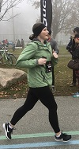
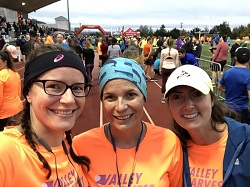
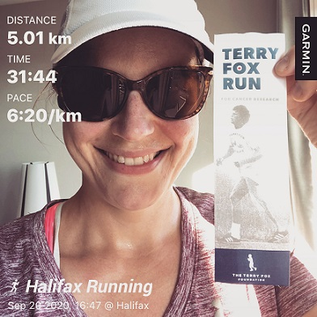
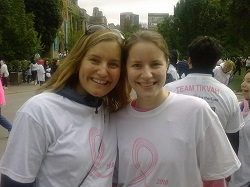

My name is Heather. I like to run. I actually like almost all things about running. I say all things because I'm not sure I know everything there is to know about running yet. I really enjoy learning new things about running whenever I can.
I like to participate in races, even though I'm only really racing against myself. I like the medal you get after a race. It represents my achievement in either completing a distance, getting a personal best, or, simply, that I ran consistently enough to complete the race.
My favourite race distance right now is the 10KM. I have never done a half-marathon or a marathon. I think I may do a half marathon within the next couple of years. I don't see me ever doing a marathon, but who knows!?
   
“We all know that if you run, you are pretty much choosing a life of success because of it.” – Deena Kastor